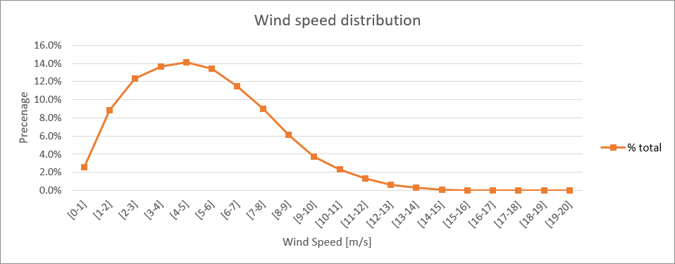
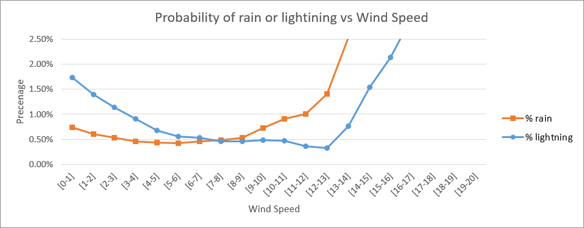
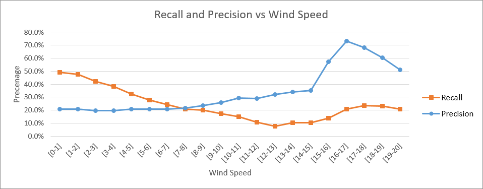

In a recent pre-print, we were studying the detection of rain via SAR observation. One issue we faced was the difficulty in evaluating the model at high wind speeds. The dataset contained collocations of Sentinel-1 and NEXRAD observations. To address this issue, we considered using lightning data from the Geostationary Lightning Mapper (GLM) as a proxy for rainfall. This enabled us to perform collocations over a larger area (and especially, not just in coastal areas) and measure the agreement between the SAR-based rainfall segmentation and the lightning map at various wind speeds. However, upon review, we were told that this experiment was only relevant if we could prove that the quality of this rainfall proxy was independent of wind speed. As a result, this experiment was not included in the final version of the paper.
We conducted triple collocations between NEXRAD, GLM, and ERA5 over an area centered on the NEXRAD station at Key West BYX (coordinates -83.97 22.52 & -79.43 26.67). Most of this area is covered by water. Collocations were performed in 2020 and 2021 (one collocation per hour). We defined rainfall as events with NEXRAD thresholding at 31.5 dBZ and 10 thunder events within 5 minutes of the collocation.
There are a few notable observations from this experiment:
1. It was difficult to obtain data for winds stronger than 10 m/s.

2.Thunder was more frequent at low wind speeds. Both rain and lightning frequency spiked at high wind speeds, but more collocations would be needed to confirm that this is not just due to outliers.

3.The recall of the lightning map as a rain proxy does vary with wind speed. As wind speed increases, the probability of a rain event being detected by the lightning map decreases. This means that the lightning map is not a wind-invariant proxy for rainfall.

It would be important to conduct this experiment at several NEXRAD stations to ensure that these observations are not simply due to regional peculiarities. However, hardware limitations (CPU and HDD) prevent this from being a priority at this time.